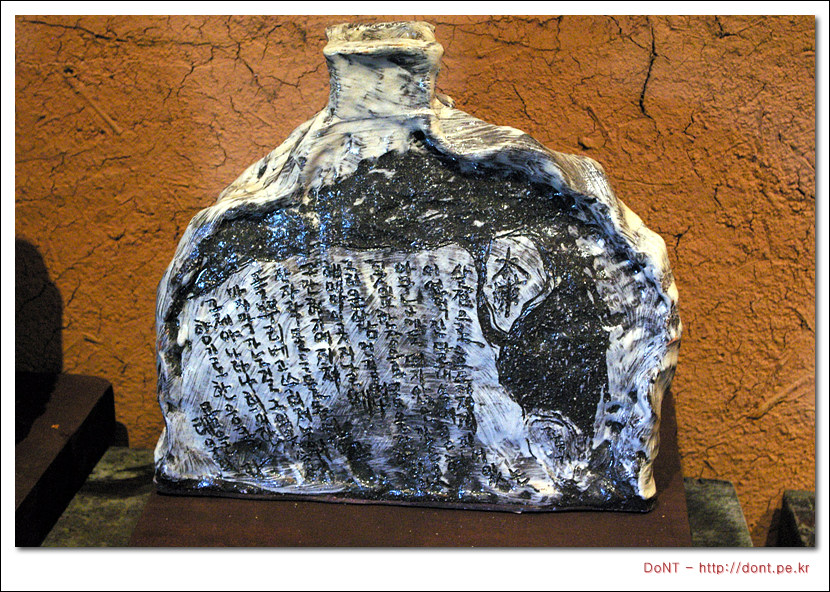

혼자 가는 여행 세번째 (20070723-27 남도여행) - 셋째날
셋째날 부터는 아무런 일정도, 계획도 없었기에 그때그때 기분 내키는 대로 마음먹고, 전날 백제불교 최초도래지를 보고, 첫 목적지를 불갑사로 정했습니다. 불갑저수지를 따라 나 있는 길은, 이른 아침 안개가 껴있는, 운치있는 드라이브 코스였습니다. 들뜬 마음으로 불갑사에 도착했지만, 이른 아침부터 공사가 한창이었기에, 오래 머물러 있을 수가 없었습니다. 대웅전 지붕위에 보이는 스투파는 일종의 사리탑인데, 인도에서 나타나는 건축양식으로 백제 불교가 인도의 영향을 받았음을 알려줍니다. 영광 불갑사, 영암 도갑사와 더불어 호남의 3갑사로 불린다는 원갑사입니다. 하지만, 다른 사찰과는 달리 그 규모가 매우 작고, 이정표에도 잘 나오지 않아 찾아가기가 힘듭니다. 다른 사찰처럼 일주문, 천왕문같은 것은 하나도 없습니다. 오직 이 계단을 올라가면 양 옆에 있는 큰 나무 두그루가 일무문이자, 천왕문 역활을 합니다. 계단을 올라가면 바로 대웅전이 보입니다. 건물 자체는 최근에 지은 듯, 매우 깨끗하지만 오랜 시간을 버텨온 멋은 찾을 수 없습니다.
증도에 들어가기 위해서는 배를 타야 합니다. 저렇게 차를 싣고 그대로 배가 떠납니다. 증도까지는 약 2시간에 한번씩 배가 있고, 차가 많이 기다리고 있으면, 임시로 배를 운행하기도 한다고 합니다. 저 옆으로는 증도까지 연결하는 증도대교가 공사중이었는데, 저 다리가 다 만들어지면, 그때 가보기로 하고 차를 돌렸습니다.

그렇게 한참을 내려오다 월선리 예솔촌에 들렸습니다. 월선리 예술촌은 다른 시골 마을처럼 사람들이 하나둘 떠나는 마을이었는데, 약 20여년전 한 도공이 들어오고, 다른 예술가들이 들어오면서 예술인들이 사는 마을이 되었습니다. 마을 한켠에 자라고 있는 구슬나무를 에워싸는 정자는 예술가들이 만들어 놓았다고 합니다. 하지만, 마을 어르신들은 이 정자가 아니라 마을 어귀에 있는 정자에 주로 모여계셨습니다. 아무래도 원래부터 마을에 살고 계시던 어르신들과, 새롭게 마을에 정착한 예술인들 사이에는 아직 보이지 않는 벽이 존재하는 듯 했습니다.


조용하게 내소사에 갔다 떠날 채비를 하기 위해 다시 정든민박으로 돌아왔습니다. 여기에 많은 사람들이 앉아서 사진을 찍어 기억하는 것 같습니다. 주인아저씨가 손수 가꾼 한눈에 들어오는 작은 공원은 주인 아저씨의 손길을 느낄 수 있습니다.
변산 8경중 2경이라는 말에 혹해, 정든민박을 떠나 직소폭포로 갔습니다. 직소폭포에 가는 길은 여러갈래가 있지만, 그 중 제일 짧은 내변산탐방지원센터-직소폭포 코스를 선택했습니다. 한참을 걷다보니, 직소폭포에서 내여오는 물을 막은 저수지가 보입니다. 시원한 폭포를 가까이에서 볼 수 있습니다. 여기에 흐르는 물은 정말 시원합니다. 흐른 땀을 닦고, 시원한 바람을 맞으면서 천천히 쉬어봅니다.


조선후기 불교를 부흥시키고, 다도를 정립시키켰으며, 시/서/화등 한국문화에 많은 영향을 끼친 초의선사의 탄생지입니다. 초의선사는 당시 다산 정약용, 추사 김정희와도 많은 교분을 나눴다고합니다. 초의선사의 수행지였던 일지암에서 초의선사는 일생의 대부분을 보내면서 많은 저서들을 남겼습니다.


무안백련축제 준비가 한창인 회산백련지에 갔습니다. 아직은 이른 기간이었는지, 햐얗게 뒤덮힌 백련을 보지는 못했습니다. 제때에 온다면, 이 넓은 곳이 온통 하얗게 뒤딮은 연꽃을 볼 수 있을 것 같습니다.